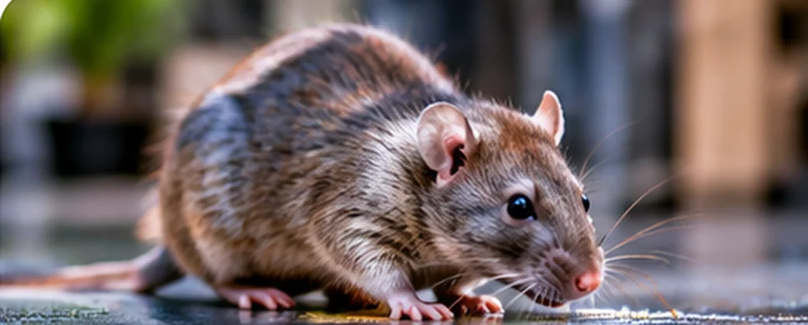

Évaluer
Comprendre le problème, les zones exposées et vos priorités.
BIOGUARD 3D · Rongeurs
Inspection des accès, identification des indices d’activité, plan d’action ciblé et conseils de prévention.
Basés à Rabat · Déplacements partout au Maroc selon faisabilité

Notre approche
Chaque lieu a ses contraintes. Notre équipe technique évalue les besoins avant de proposer la méthode adaptée.
Comprendre le problème, les zones exposées et vos priorités.
Définir une intervention ciblée et communiquer les consignes utiles.
Partager les recommandations et organiser le suivi lorsque nécessaire.
Pour les professionnels et particuliers
Pour les établissements professionnels, les documents d’intervention et les modalités de suivi sont définis selon la prestation convenue. Une attestation de passage peut être remise pour un passage réellement effectué, avec des informations exactes sur l’intervention.
Découvrir nos solutions professionnelles →Indiquez votre ville, votre type de local et le problème rencontré. Nous vous orienterons vers la suite adaptée.
☎ 06 75 31 13 17Envoyer un e-mailReconnaître les signes
Plusieurs indices peuvent révéler une activité de rongeurs. Leur présence ne suffit pas toujours à identifier l'espèce ou l'ampleur du problème : une inspection reste nécessaire.
Petites déjections, traces de passage ou marques grasses le long des murs et derrière les équipements.
Grattements, emballages rongés, câbles ou matériaux endommagés : des signes à faire examiner rapidement.
Ouvertures autour des canalisations, stockage des denrées, déchets accessibles et zones peu inspectées.
Méthode de travail
Le traitement dépend du bâtiment, du niveau d'activité observé et des contraintes du site. Il n'existe pas de solution unique pour tous les locaux.
Repérage des indices, accès possibles et zones sensibles.
Choix des mesures adaptées, avec prise en compte des occupants et de l'activité.
Mise en œuvre des mesures convenues et communication des précautions nécessaires.
Conseils sur les accès, le rangement et l'hygiène ; contrôle complémentaire si prévu.
Particuliers
Maison, appartement, cave ou garage : décrivez les signes observés et les pièces concernées pour préparer l'évaluation.
Devis pour mon logementProfessionnels
Restaurants, boulangeries, hôtels et locaux professionnels : diagnostic adapté aux zones de stockage, de préparation et de circulation.
Solutions pour les établissementsQuestions fréquentes
Le devis dépend notamment de la surface, des indices observés, des accès, du type de local et de la nécessité éventuelle d'un suivi. Contactez-nous pour une évaluation.
Pas toujours. La nécessité de contrôles complémentaires dépend de la situation, des sources d'attraction et des accès encore présents.
Les consignes dépendent des méthodes retenues et des caractéristiques du local. Notre équipe précise les précautions applicables avant toute intervention.
Nous étudions les demandes à Salé, Témara et dans d'autres villes marocaines. Les déplacements sont confirmés selon la faisabilité.
Contactez BIOGUARD 3D pour discuter de votre situation.